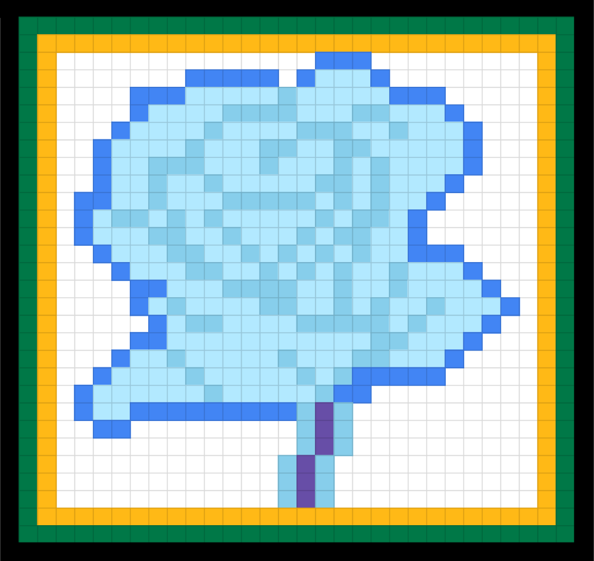

The favicon was created using a 32x32 pixelated space. It contains 1024 bits. The borders of the favicon are the colors of the Jamaican flag because it represents my culture. In the inside, there is a blue rose to show behind borders, there is something precious. The rose is blue because blue is my favorite color. It was added to the page using the link element (< link>).
